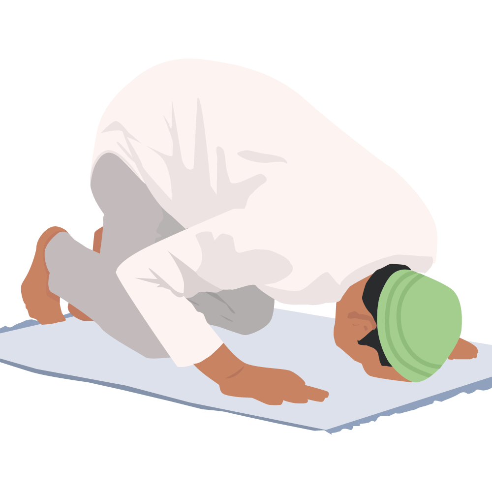
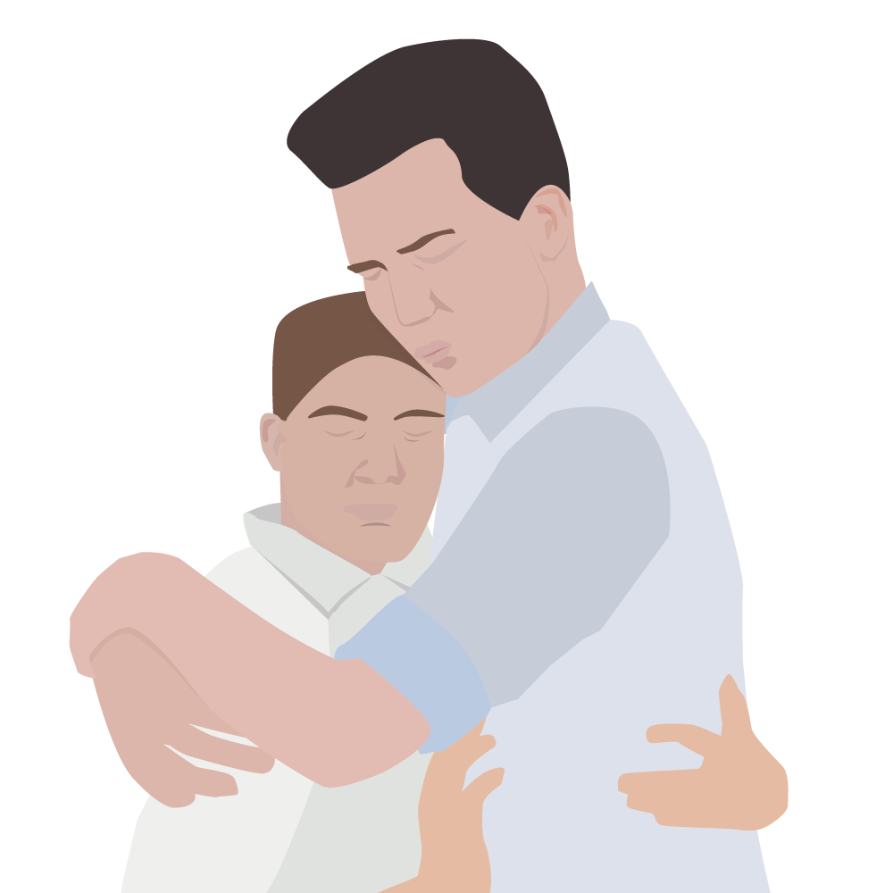

Actuality is the need to attend to the practical reality of the lives of people being cared for or supported and not some other imposed and idealised situation. It acknowledges who they are, rather than who you or others think they should be.
Actuality
You are presented with a situation on the cards below. Select the card to flip it over and see how you can apply the principle of actuality in that situation in your role as a support worker.

You think religion is a waste of time and the person you are supporting has a number of prayer times throughout the day.
|
What you think about religion doesn’t matter. Just accept that this is how he wants to live his life, and work around his prayer time. |

You believe marriage should only be between a man and a woman, but you have to work with a same sex couple.
|
You should accept the actuality of their lives, acknowledge that they are in a relationship and treat them like any other couple. |